data(aidssi, package="mstate") # AIDS data set
data(ebmt3, package="mstate") # transplant data setCompeting Risks and Multistate Models
An excellent introduction to multistate models is found in Putter, Fiocco and Geskus, Tutorial in biostatistics: Competing risks and multistate models H., M., and B. (2007). In this section we recreate the graphs and tables from the paper; it parallels a similar document that is a vignette in the mstate package. This vignette uses newer features of the survival package which directly support multistate models; these features were not available at the time the tutorial paper was written. The vignette will make the most sense if it is read in parallel with the paper.
The tutorial uses two data sets which are included in the mstate package. The first is data from 329 homosexual men from the Amsterdam Cohort Studies on HIV infection and AIDS. A competing risks analysis is done with the appearance of syncytium inducing (SI) phenotype and AIDS diagnosis as the endpoints. The second data set is from the European Blood and Marrow Transplant (EBMT) registry, and follows 2204 subjects who had a transplant, forward to relapse or death, with platelet recovery as an intermediate state.
1 AID data set, competing risk
The first analysis uses the AID data set and a competing risks transition shown in the figure below.
oldpar <- par(mar=c(0,0,0,0))
states <- c("Event free", "AIDS", "SI")
smat <- matrix(0, 3, 3, dimnames=list(states, states))
smat[1,2] <- smat[1,3] <- 1
statefig(1:2, smat)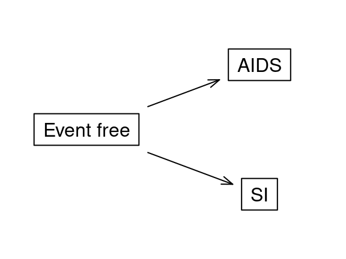
par(oldpar)The statefig routine is designed primarily for ease of use and creates figures that are “good enough” for most uses.
1.1 Aalen-Johansen curves
We first create a multistate status variable and use it to plot the competing risk curves for the outcome. A key tool for dealing with multistate outcomes is replacement of the usual “status” variable of 0= censored, 1=event (or FALSE=censored TRUE = event) with a factor variable in the Surv function. This allows us to specify not just that an event occurred, but what type of event.
aidssi$event <- factor(aidssi$status, 0:2, c("censored", "AIDS", "SI"))
# The correct Aalen-Johansen curves
ajfit <- survfit(Surv(time, event) ~1, data = aidssi)
ajfit$transitions
#> to
#> from AIDS SI (censored)
#> (s0) 114 108 107
#> AIDS 0 0 0
#> SI 0 0 0
plot(ajfit, xmax = 13, col = 1:2, lwd = 2,
xlab = "Years from HIV infection", ylab = "Probability")
legend(8, .2, c("AIDS", "SI"), lty = 1, lwd = 2, col = 1:2, bty = 'n')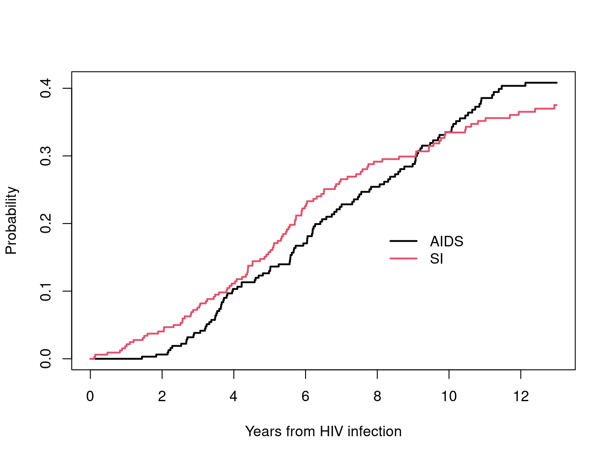
Since an initial state was not specified in the data or the survfit call, the function assumes that all subjects started in a common state (s0) = “state 0”. Like the (Intercept) term in a linear model fit, the name created by the survfit function is placed in parenthesis to avoid overlap with any variable names in the data. The transitions matrix shows that 114 subjects transitioned from this initial state to AIDS, 108 transitioned to SI, and 107 were censored.
A small footnote: The survfit routine in R produces Aalen-Johansen (AJ) estimates, which are applicable to any state space diagram (an arrangement of boxes and arrows). For a simple two state model such as alive & dead, the AJ estimate reduces to a Kaplan-Meier (KM). For a competing risk model such as this, the AJ estimate produces the same values as the cumulative incidence estimator. Put another way, the KM and CI are special cases of the AJ. The tutorial uses all three labels of KM, CI, and AJ.
We will use “Txx” to stand for figures or page numbers in the tutorial. Figure 2 (T2) shows the two Kaplan-Meier curves, with one going uphill and the other downhill. The estimated fraction with AIDS is the area above the red curve, the fraction with SI the area below the blue one, and the middle part is the fraction with neither. The fact that they cross is used to emphasize the inconsistency of the two estimates, i.e., that they add to more than 1.0.
# re-create figure T2
# KM curves that censor the other endpoint (a bad idea)
bad1 <- survfit(Surv(time, event=="AIDS") ~ 1, data = aidssi)
bad2 <- survfit(Surv(time, event=="SI") ~1, data = aidssi)
plot(bad1, conf.int = FALSE, xmax = 13,
xlab = "Years from HIV infection", ylab = "Probability")
lines(bad2, conf.int = FALSE, fun = 'event', xmax = 13)
text(c(8,8), c(.8, .22), c("AIDS", "SI"))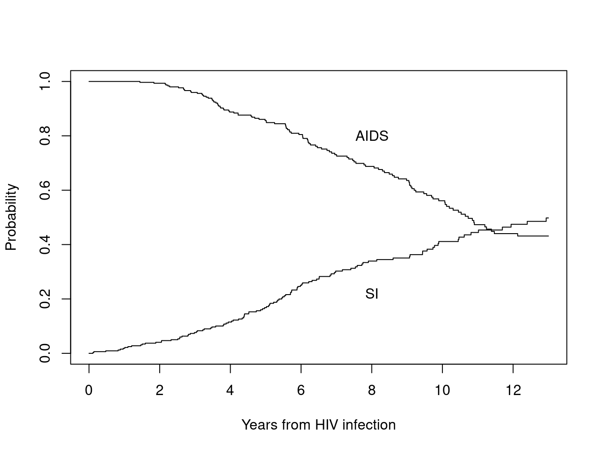
Figure 3 (T3) shows the Aalen-Johansen curves in the same form. The default in the survival package is to plot each curve on the natural axis \(p_k(t)\) = probability of being in state \(k\) at time \(t\), which is the pstate component of the survfit object. The authors of the tutorial like to use a stacked display: the distance between the horizontal axis and the first curve is the probability of being in state 1, the distance between the first and second lines is the probability of being in state 2, etc. Since \(\sum_k p_k(t)=1\) (everyone has to be somewhere), the final curve is a horizontal line at 1. The following helper function pstack for stacked curves draws the plots in this form. At time 0 the two lines are at y= 0 and 1: everyone is in the “neither AIDS or SI” group.
pstack <- function(fit, top=FALSE, ...) {
temp <- survfit0(fit) # add the point at time 0
if (is.matrix(temp$pstate)) # usual case
temp$pstate <- t(apply(temp$pstate, 1, cumsum))
else if (is.array(temp$pstate))
temp$pstate <- aperm(apply(temp$pstate, 1:2, cumsum), c(2,3,1))
# this works because we don't change any other aspect of the survfit
# object, but only modify the probabilities.
if (top) plot(temp, noplot="", ...)
else plot(temp, noplot=temp$states[length(temp$states)], ...)
}# re-create figure T3
pstack(ajfit[c(2,1,3)], col=1, xmax=13, lwd=2,
xlab="Years from HIV infection", ylab="Probability")
lines(bad1, conf.int=FALSE, col="lightgray")
lines(bad2, conf.int=FALSE, fun='event', col='lightgray')
text(c(4, 8,8), c(.5, .85, .15), c("Event free", "AIDS", "SI"), col=1)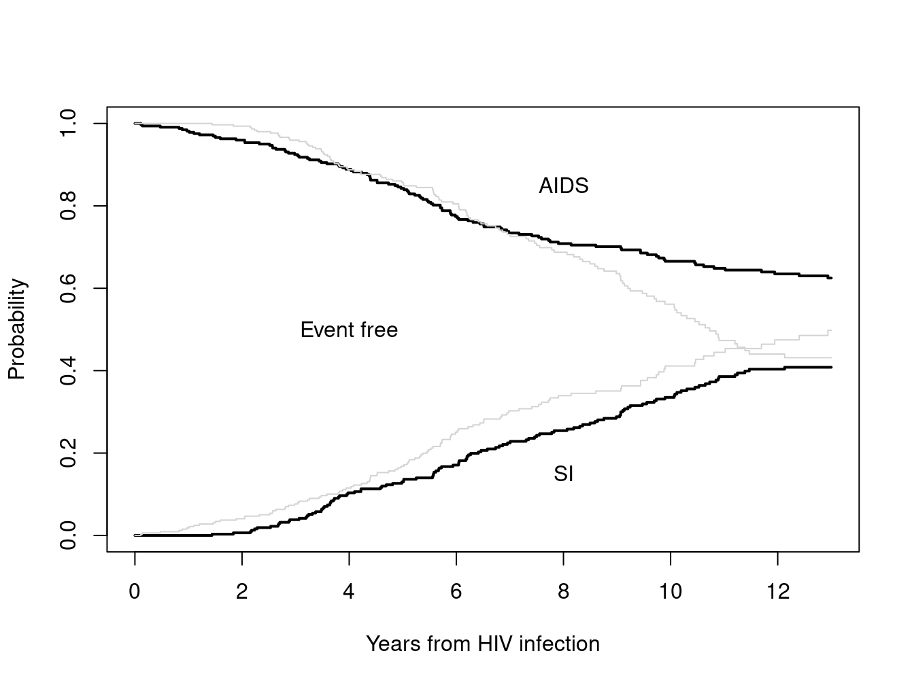
Figure 4 (T4) reorders the states so the event free is the top group. This author prefers the unstacked version (Figure 1), which shows more clearly that the probabilities of the two outcomes are very nearly the same.
pstack(ajfit[c(2,3,1)], xmax=13, lwd=2, col=1, ylim=c(0,1),
xlab="Years from HIV infection", ylab="Probability")
text(c(11, 11, 11), c(.2, .55, .9), c("AIDS", "SI", "Event free"))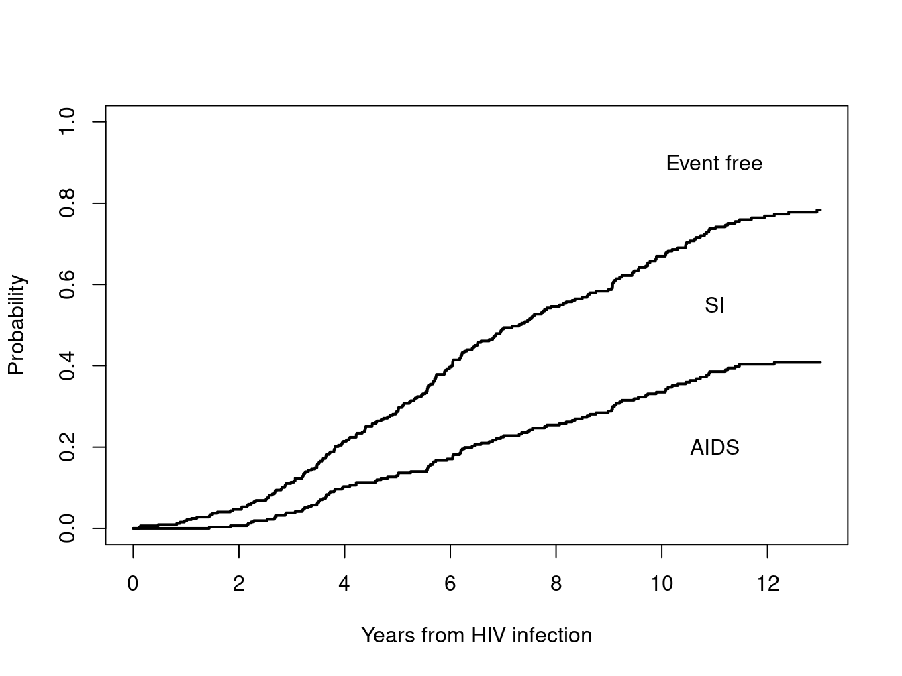
A last point is to note that for cumulative hazard functions, you can do the estimates separately for each endpoint, censoring the other. In the figure below, the estimates from the joint fit and those from the “bad” fits completely overlay each other.
plot(ajfit, cumhaz=TRUE, xmax=13, col=1:2, lty=2,
xlab="Years from HIV infection", ylab="Cumulative incidence")
lines(bad1, cumhaz=TRUE, conf.int=FALSE)
lines(bad2, cumhaz=TRUE, col=2, conf.int=FALSE)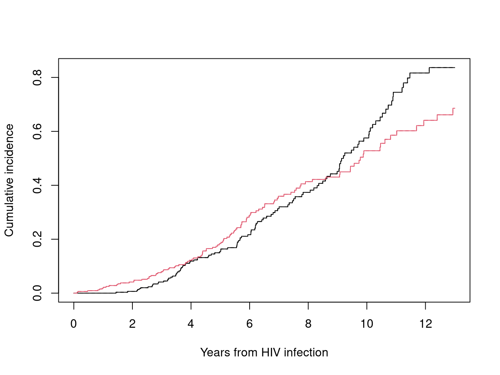
1.2 Proportional hazards models
The code below first fits a joint model for the two endpoints, followed by individual models for the two rates, each of which treats the other endpoint as censored.
cfit0 <- coxph(Surv(time, event) ~ ccr5, data = aidssi, id = patnr)
print(cfit0, digits=2)
#> Call:
#> coxph(formula = Surv(time, event) ~ ccr5, data = aidssi, id = patnr)
#>
#>
#> 1:2 coef exp(coef) se(coef) robust se z p
#> ccr5WM -1.24 0.29 0.31 0.30 -4.2 3e-05
#>
#>
#> 1:3 coef exp(coef) se(coef) robust se z p
#> ccr5WM -0.25 0.78 0.24 0.23 -1.1 0.3
#>
#> States: 1= (s0), 2= AIDS, 3= SI
#>
#> Likelihood ratio test=23 on 2 df, p=9.3e-06
#> n= 324, unique id= 324, number of events= 220
#> (5 observations deleted due to missingness)
cfit1 <- coxph(Surv(time, event=="AIDS") ~ ccr5, data = aidssi)
print(cfit1, digits=2)
#> Call:
#> coxph(formula = Surv(time, event == "AIDS") ~ ccr5, data = aidssi)
#>
#> coef exp(coef) se(coef) z p
#> ccr5WM -1.24 0.29 0.31 -4 6e-05
#>
#> Likelihood ratio test=22 on 1 df, p=2.8e-06
#> n= 324, number of events= 113
#> (5 observations deleted due to missingness)
cfit2 <- coxph(Surv(time, event=="SI") ~ ccr5, data = aidssi)
print(cfit2, digits=2)
#> Call:
#> coxph(formula = Surv(time, event == "SI") ~ ccr5, data = aidssi)
#>
#> coef exp(coef) se(coef) z p
#> ccr5WM -0.25 0.78 0.24 -1.1 0.3
#>
#> Likelihood ratio test=1.2 on 1 df, p=0.27
#> n= 324, number of events= 107
#> (5 observations deleted due to missingness)Notice that the coefficients for the joint fit are identical to those where each endpoint is fit separately. This highlights a basic fact of multistate models
- Item hazards and cumulative hazards can be estimated one by one.
- Probability in state (absolute risk) must be estimated jointly.
The Cox model is a model for the hazards, and the separability allows for a lot of freedom in how code and data sets are constructed. (It also gives more opportunity for error, and for this reason the authors prefer the joint approach of cfit0). The tutorial fits separate Cox models, page T2404, of the form found in cfit1 and cfit2. We can also fit the joint model ‘by hand’ using a stacked data set, which will have 329 rows = number of subjects for the AIDS endpoint, followed by 329 rows for the SI endpoint. We had to be a bit cautious since the tutorial uses “cause” for the event type and the data set aidsii already has a variable by that name; hence the initial subset call.
temp <- subset(aidssi, select= c(patnr, time, ccr5))
temp1 <- data.frame(temp, status= 1*(aidssi$event=="AIDS"), cause="AIDS")
temp2 <- data.frame(temp, status= 1*(aidssi$event=="SI"), cause="SI")
stack <- rbind(temp1, temp2)
cfit3 <- coxph(Surv(time, status) ~ ccr5 * strata(cause), data=stack)
print(cfit3, digits=2)
#> Call:
#> coxph(formula = Surv(time, status) ~ ccr5 * strata(cause), data = stack)
#>
#> coef exp(coef) se(coef) z p
#> ccr5WM -1.24 0.29 0.31 -4.0 6e-05
#> ccr5WM:strata(cause)SI 0.98 2.67 0.39 2.5 0.01
#>
#> Likelihood ratio test=23 on 2 df, p=9.3e-06
#> n= 648, number of events= 220
#> (10 observations deleted due to missingness)The use of an interaction term gives a different form for the coefficients; the second is now the difference in CCR-5 effect between the two endpoints. Which form one prefers is a matter of taste. In the tutorial they used the equation Surv(time, status) ~ ccr5*cause + strata(cause), which leads to a redundant variable in the \(X\) matrix of the regression and a consequent NA coefficient in the data set, but does not otherwise affect the results. We can also add individual indicator variables to the stacked data set for ccr within type, which gives yet another way of writing the same model. Last, we verify that the partial likelihoods for our three versions are all identical.
stack$ccr5.1 <- (stack$ccr5=="WM") * (stack$cause == "AIDS")
stack$ccr5.2 <- (stack$ccr5=="WM") * (stack$cause == "SI")
cfit3b <- coxph(Surv(time, status) ~ ccr5.1 + ccr5.2 + strata(cause), data = stack)
cfit3b$coef
#> ccr5.1 ccr5.2
#> -1.2358147 -0.2542042
temp <- cbind(cfit0=cfit0$loglik, cfit3=cfit3$loglik, cfit3b=cfit3b$loglik)
rownames(temp) <- c("beta=0", "beta=final")
temp
#> cfit0 cfit3 cfit3b
#> beta=0 -1116.693 -1116.689 -1116.689
#> beta=final -1105.107 -1105.102 -1105.102We can also fit a models where the effect of ccr5 on the two types of outcome is assumed to be equal. (We agree with the tutorial that there is not good medical reason for such an assumption, the model is simply for illustration.) Not surprisingly, the realized coefficient is midway between the estimates of the ccr effect on the two separate endpoints. The second fit uses the joint model approach by adding a constraint. In this case the formula argument for coxph is a list. The first element of the list is a standard formula containing the response and a set of covariates, and later elements, and the second, third, etc. elements of the list are of the form state1:state2 ~ covariates. These later element modify the formula for selected pairs of states. In this case the second element specifies transitions from state 1 to 2 and 1:3 should share a common ccr5 coefficient.
common1 <- coxph(Surv(time, status) ~ ccr5 + strata(cause), data=stack)
print(common1, digits=2)
#> Call:
#> coxph(formula = Surv(time, status) ~ ccr5 + strata(cause), data = stack)
#>
#> coef exp(coef) se(coef) z p
#> ccr5WM -0.70 0.50 0.19 -3.8 2e-04
#>
#> Likelihood ratio test=16 on 1 df, p=5e-05
#> n= 648, number of events= 220
#> (10 observations deleted due to missingness)
common1b <- coxph(list( Surv(time, event) ~ 1,
1:2 + 1:3 ~ ccr5/common ),
data=aidssi, id=patnr)At this point the tutorial explores an approach that we find problematic, which is to fit models to the stacked data set without including the stratum. The partial likelihood for the Cox model has a term for each event time, each term is a ratio that compares the risk score of the event (numerator) to the sum of risk scores for all subjects who were at risk for the event (denominator). When the stack data set is fit without a strata statement, like below, then at each event time the “risk set” will have 2 clones of each subject, one labeled with covariate cause = AIDS and the other as SI. If we look closely, the estimated coefficient from this second fit is almost identical to the stratified fit common1, however.
common2 <- coxph(Surv(time, status) ~ ccr5, data = stack)
all.equal(common2$coef, common1$coef)
#> [1] "Mean relative difference: 8.40399e-05"In fact, if the Breslow approximation is used for ties, one can show that the partial likelihood (PL) values for the two fits will satisfy the identity PL(common2) = PL(common1) - d log(2), where \(d\) is the total number of events. Since the two partial likelihoods differ by a constant, they will maximize at the same location, i.e., give exactly the same coefficient estimates. One can further show that if cause is added to the second model as a covariate, that this will not change the ccr5 coefficient, while adding an estimate of the relative proportion of events of each type.
# reprise common1 and common2, using the breslow option
test1 <- coxph(Surv(time, status) ~ ccr5 + strata(cause), stack,
ties='breslow')
test2 <- coxph(Surv(time, status) ~ ccr5, stack, ties='breslow')
all.equal(test2$loglik + test2$nevent * log(2), test1$loglik)
#> [1] TRUE
all.equal(test2$coef, test1$coef)
#> [1] TRUE
test3 <- coxph(Surv(time, status) ~ ccr5 + cause, stack, ties='breslow')
test3
#> Call:
#> coxph(formula = Surv(time, status) ~ ccr5 + cause, data = stack,
#> ties = "breslow")
#>
#> coef exp(coef) se(coef) z p
#> ccr5WM -0.70115 0.49601 0.18597 -3.770 0.000163
#> causeSI -0.05456 0.94690 0.13489 -0.404 0.685867
#>
#> Likelihood ratio test=16.62 on 2 df, p=0.0002459
#> n= 648, number of events= 220
#> (10 observations deleted due to missingness)
all.equal(test3$coef[1], test1$coef)
#> [1] TRUEThese identities do not assure the author that this pseudo risk set approach, where subjects are duplicated, is a valid way to estimate the ccr5 effect under the assumption of a common baseline hazard. The first model common1 can be directly fit in the multistate framework by adding the constraint of a common ccr5 effect for the two transitions; this is found above as common1b. One can not directly fit a version of test2 using the multistate model, however, as the underlying code for multistate fits rigorously enforces a “one copy” principle: during the entire period of time that a subject is at risk, there should be exactly one copy of that subject present in the data set. See the survcheck routine for a more detailed discussion.
1.3 Predicted curves
We can now generate predicted Aalen-Johansen curves from the Cox model fits. As with any Cox model, this starts by deciding who to predict, i.e. the set of covariate values at which to obtain a prediction. For a model with a single binary variable this is an easy task.
# re-create figure T5 in a single panel
dummy <- data.frame(ccr5=c("WW", "WM"))
pred.aj <- survfit(cfit0, newdata=dummy)
dim(pred.aj)
#> data states
#> 2 3
pred.aj$states
#> [1] "(s0)" "AIDS" "SI"The resulting curves have an apparent dimension of (number of strata, number of covariate patterns, number of states). We plot subsets of the curves by using subscripts. (When there are no strata in the coxph fit (1 stratum) the code allows one to omit the first subscript.)
oldpar <- par(mfrow=c(1,2))
plot(pred.aj[,,"AIDS"], lwd=2, col=c("black", "gray"),
xmax=13, ylim=c(0,.5),
xlab="Years from HIV infection", ylab="Probability of AIDS")
text(c(9.5, 10), c(.3, .1), c("WW", "WM"))
plot(pred.aj[,,"SI"], lwd=2, col=c("black", "gray"),
xmax=13, ylim=c(0,.5),
xlab="Years from HIV infection", ylab="Probability of SI")
text(c(8.5, 9), c(.33, .25), c("WW", "WM"))
par(oldpar)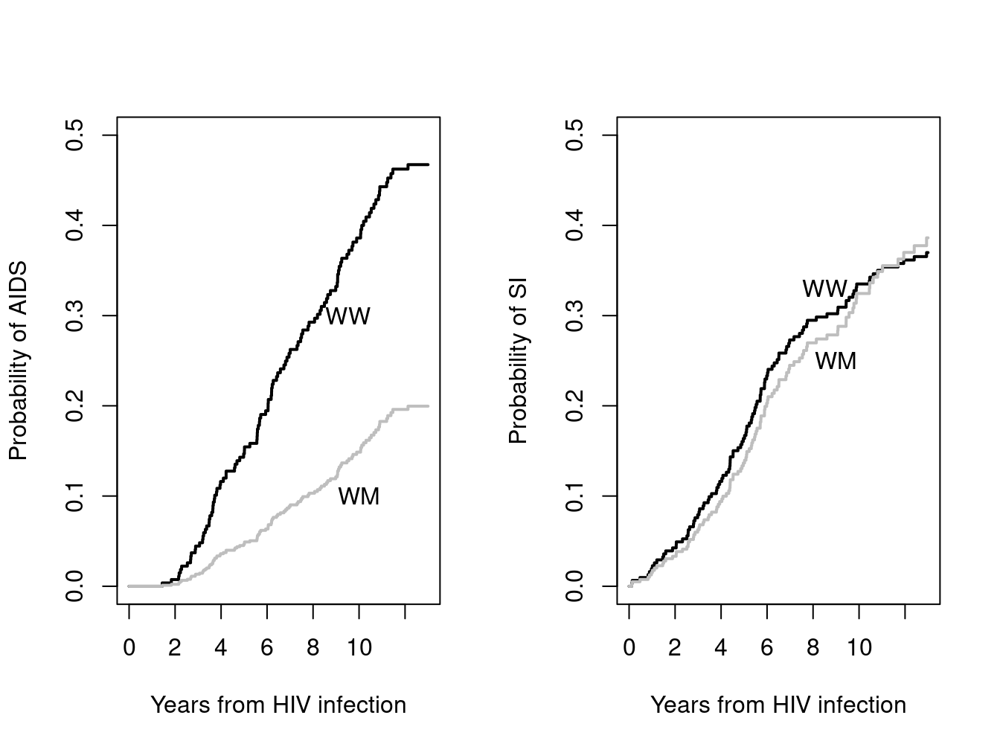
Predicted survival curves from the two fits to individual endpoints suffer from the same issue as the individual Kaplan-Meier curves bad1 and bad2: the predicted risk risk of having either AIDS or SI will be greater than 1 for some time points, which is clearly impossible. Absolute risk estimates must be done jointly. The tutorial at this point uses simulation data to further elucidate the underlying issues between per-endpoint and joint estimates, which we will not replicate.
1.4 Fine-Gray fits
We can also fit Fine-Gray models for AIDS and SI appearance. In the survival package this is done by creating a special data set - one for each endpoint. Ordinary Cox model code can then be applied to those data sets.
fdata1 <- finegray(Surv(time, event) ~ ., data = aidssi, etype = 'AIDS')
fgfit1 <- coxph(Surv(fgstart, fgstop, fgstatus) ~ ccr5, data = fdata1,
weight = fgwt)
fgfit1
#> Call:
#> coxph(formula = Surv(fgstart, fgstop, fgstatus) ~ ccr5, data = fdata1,
#> weights = fgwt)
#>
#> coef exp(coef) se(coef) robust se z p
#> ccr5WM -1.0043 0.3663 0.3059 0.2830 -3.549 0.000387
#>
#> Likelihood ratio test=13.94 on 1 df, p=0.000189
#> n= 2668, number of events= 113
#> (21 observations deleted due to missingness)
fdata2 <- finegray(Surv(time, event) ~., aidssi, etype="SI")
fgfit2 <- coxph(Surv(fgstart, fgstop, fgstatus) ~ ccr5, fdata2,
weight = fgwt)
fgfit2
#> Call:
#> coxph(formula = Surv(fgstart, fgstop, fgstatus) ~ ccr5, data = fdata2,
#> weights = fgwt)
#>
#> coef exp(coef) se(coef) robust se z p
#> ccr5WM 0.02366 1.02394 0.23554 0.21832 0.108 0.914
#>
#> Likelihood ratio test=0.01 on 1 df, p=0.9202
#> n= 2195, number of events= 107
#> (31 observations deleted due to missingness)The predicted curves based on the Fine-Gray model @ref(fig:fig-T8) (T8) use the ordinary survival tools (not Aalen-Johansen), since they are ordinary Cox models on a special data set.
# re-create figure T8: Fine-Gray curves
fgsurv1<-survfit(fgfit1, newdata=dummy)
fgsurv2<-survfit(fgfit2, newdata=dummy)
oldpar <- par(mfrow=c(1,2), mar=c(4.1, 3.1, 3.1, 1)) #leave room for title
plot(fgsurv1, col=1:2, lty=c(1,1,2,2), lwd=2, xmax=13,
ylim=c(0, .5),fun='event',
xlab="Years from HIV infection", ylab="Probability")
title("AIDS")
plot(fgsurv2, col=1:2, lty=c(1,1,2,2), lwd=2, xmax=13,
ylim=c(0, .5), fun='event',
xlab="Years from HIV infection", ylab="Probability")
title("SI appearance")
par(oldpar)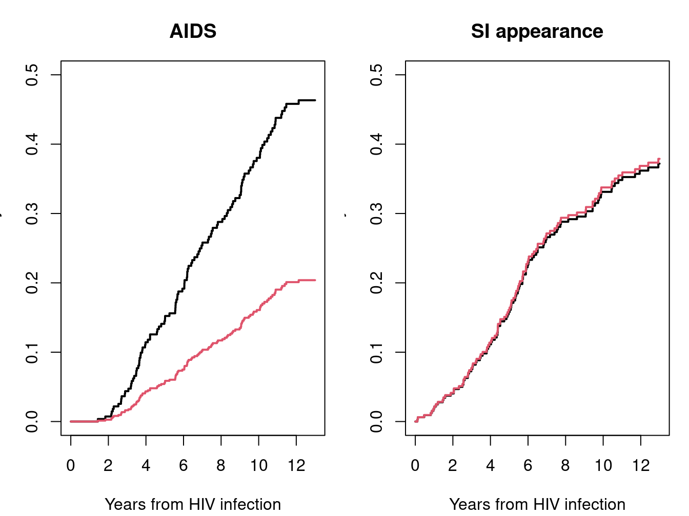
The last Figure 8 (T9) in this section of the tutorial contains the Aalen-Johansen non-parametric fits stratified by CCR5 status.
# re-create figure T9: curves by CCR type
aj2 <- survfit(Surv(time, event) ~ ccr5, data = aidssi)
oldpar <- par(mfrow=c(1,2))
plot(aj2[,"AIDS"], xmax=13, col=1:2, lwd=2, ylim=c(0, .5),
xlab="Years from HIV infection", ylab="Probability of AIDS")
text(c(10, 10), c(.35, .07), c("WW", "WM"))
plot(aj2[,"SI"], xmax=13, col=1:2, lwd=2, ylim=c(0, .5),
xlab="Years from HIV infection", ylab="Probability of SI")
text(c(8, 8), c(.34, .18), c("WW", "WM"))
par(oldpar)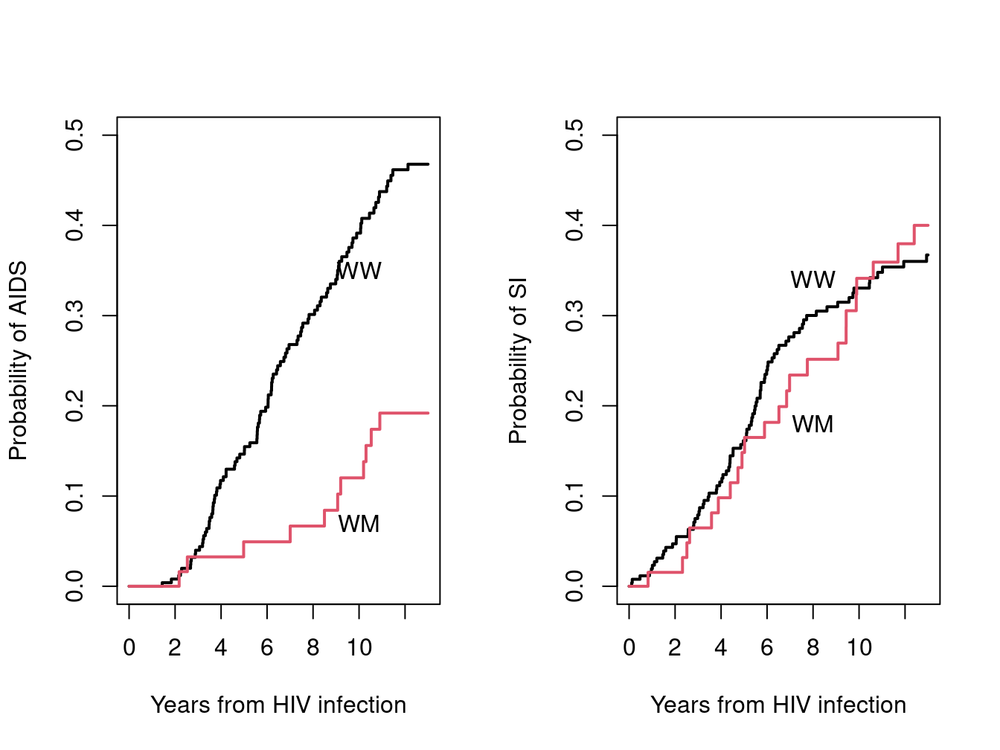
2 EBMT data set, multistate model
The multistate model is based on patients from the European Blood and Marrow Transplant registry. The initial state for each subject is bone marrow transplant after which they may have platelet recovery (PR); the end stage is relapse or death. Important covariates are the disease classification of AML, ALL or CML, age at transplant (3 groups), whether T-cell depletion was done, and whether donor and recipient are sex matched.
oldpar <- par(mar=c(0,0,0,0))
states <- c("Transplant", "Platelet recovery",
"Relapse or death")
tmat <- matrix(0, 3,3, dimnames=list(states, states))
tmat[1,2] <- tmat[1,3] <- tmat[2,3] <- 1 # arrows
statefig(cbind((1:3)/4, c(1,3,1)/4), tmat)
text(c(.3, .5, .7), c(.5, .3, .5), c(1169, 458, 383))
par(oldpar)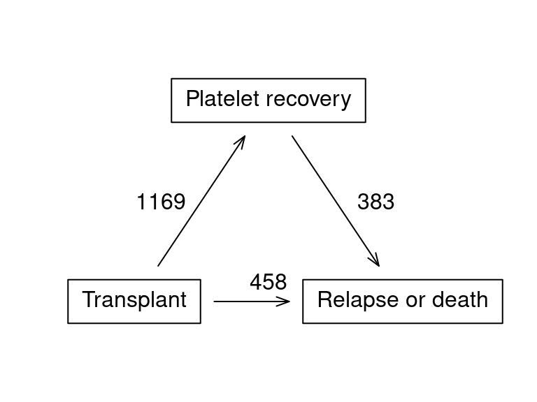
2.1 Aalen-Johansen curves
We first reprise table T2 to verify that we have the same data set.
table(ebmt3$dissub)
#>
#> AML ALL CML
#> 853 447 904
table(ebmt3$drmatch)
#>
#> No gender mismatch Gender mismatch
#> 1648 556
table(ebmt3$tcd)
#>
#> No TCD TCD
#> 1928 276
table(ebmt3$age)
#>
#> <=20 20-40 >40
#> 419 1057 728Next create the analysis data set edata. The tmerge function creates the basic time course data set that tracks a subject from state to state using (tstart, tstop) intervals of time. We also shorten one of the factor labels so as to better fit the printout on a page. Printout of a subset of rows shows that subjects 8 and 11 achieve PR, subject 9 is censored at 3.5 years (1264/365), and subject 10 dies at about 1 year. Note that the variable for prior platelet recovery (priorpr) lags the platelet recovery event. The survcheck call is an important check of the data set. The transitions table shows that about 28% (577/2204) of the subjects had neither platelet recover or failure by the end of follow-up while 383 experienced both. Most important is that the routine reported no errors in the data.
temp <- subset(ebmt3, select = -c(prtime, prstat, rfstime, rfsstat))
edata <- tmerge(temp, ebmt3, id,
rstat = event(rfstime, rfsstat),
pstat = event(prtime, prstat),
priorpr = tdc(prtime))
print(edata[15:20,-(3:5)])
#> id dissub tstart tstop rstat pstat priorpr
#> 15 8 ALL 0 35 0 1 0
#> 16 8 ALL 35 1448 0 0 1
#> 17 9 AML 0 1264 0 0 0
#> 18 10 CML 0 338 1 0 0
#> 19 11 AML 0 50 0 1 0
#> 20 11 AML 50 84 1 0 1
# Check that no one had recovery and death on the same day
with(edata, table(rstat, pstat))
#> pstat
#> rstat 0 1
#> 0 1363 1169
#> 1 841 0
# Create the factor outcome
edata$event <- with(edata, factor(pstat + 2*rstat, 0:2,
labels = c("censor", "PR", "RelDeath")))
levels(edata$drmatch) <- c("Match", "Mismatch")
survcheck(Surv(tstart, tstop, event) ~1, edata, id=id)
#> Call:
#> survcheck(formula = Surv(tstart, tstop, event) ~ 1, data = edata,
#> id = id)
#>
#> Unique identifiers Observations Transitions
#> 2204 3373 2010
#>
#> Transitions table:
#> to
#> from PR RelDeath (censored)
#> (s0) 1169 458 577
#> PR 0 383 786
#> RelDeath 0 0 0
#>
#> Number of subjects with 0, 1, ... transitions to each state:
#> count
#> state 0 1 2
#> PR 1035 1169 0
#> RelDeath 1363 841 0
#> (any) 577 1244 383We then generate the multistate \(P(t)\) curves, a plot that does not appear in the tutorial. It shows the rapid onset of platelet recovery followed by a slow but steady conversion of these patients to relapse or death.
surv1 <- survfit(Surv(tstart, tstop, event) ~ 1, edata, id=id)
surv1$transitions # matches the Frequencies on page C5
#> to
#> from PR RelDeath (censored)
#> (s0) 1169 458 577
#> PR 0 383 786
#> RelDeath 0 0 0
plot(surv1, col=1:2, xscale=365.25, lwd=2,
xlab="Years since transplant", ylab="Fraction in state")
legend(1000, .2, c("Platelet recovery", "Death or Relapse"),
lty=1, col=1:2, lwd=2, bty='n')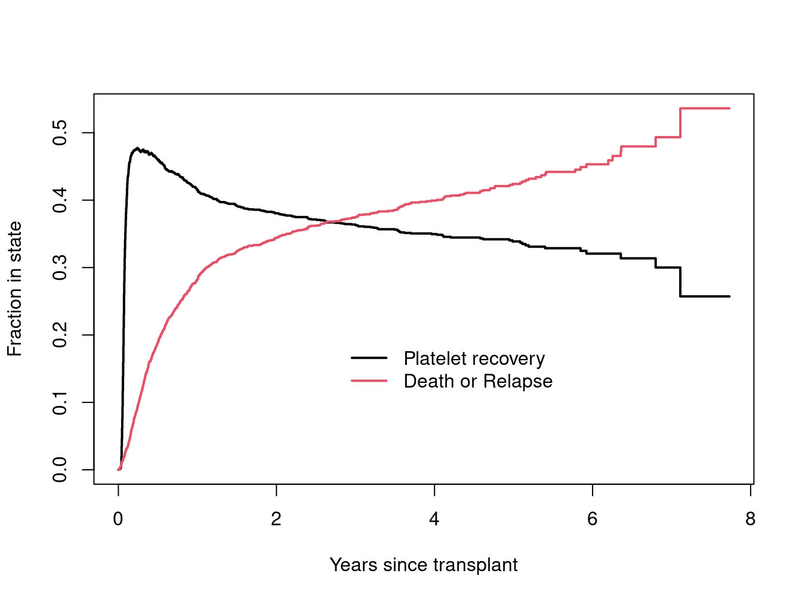
2.2 Proportional hazards models
The default fit has separate baseline hazards and separate coefficients for each transition, and is given below. We have used the Breslow approximation for ties so as to exactly match the paper. By default the program uses a robust standard error to account for the fact that some subjects have multiple events. This reproduces the results in the first column of table III.
efit1 <- coxph(Surv(tstart, tstop, event) ~ dissub + age + drmatch + tcd,
id=id, data=edata, ties='breslow')
print(efit1, digits=2)
#> Call:
#> coxph(formula = Surv(tstart, tstop, event) ~ dissub + age + drmatch +
#> tcd, data = edata, ties = "breslow", id = id)
#>
#>
#> 1:2 coef exp(coef) se(coef) robust se z p
#> dissubALL -0.044 0.957 0.078 0.074 -0.6 0.55
#> dissubCML -0.297 0.743 0.068 0.068 -4.4 1e-05
#> age20-40 -0.165 0.848 0.079 0.076 -2.2 0.03
#> age>40 -0.090 0.914 0.086 0.083 -1.1 0.28
#> drmatchMismatch 0.046 1.047 0.067 0.064 0.7 0.47
#> tcdTCD 0.429 1.536 0.080 0.075 5.7 1e-08
#>
#>
#> 1:3 coef exp(coef) se(coef) robust se z p
#> dissubALL 0.256 1.292 0.135 0.139 1.8 0.07
#> dissubCML 0.017 1.017 0.108 0.109 0.2 0.88
#> age20-40 0.255 1.291 0.151 0.149 1.7 0.09
#> age>40 0.526 1.693 0.158 0.157 3.4 8e-04
#> drmatchMismatch -0.075 0.928 0.110 0.108 -0.7 0.49
#> tcdTCD 0.297 1.345 0.150 0.145 2.0 0.04
#>
#>
#> 2:3 coef exp(coef) se(coef) robust se z p
#> dissubALL 0.136 1.146 0.148 0.153 0.9 0.37
#> dissubCML 0.247 1.280 0.117 0.117 2.1 0.04
#> age20-40 0.062 1.063 0.153 0.155 0.4 0.69
#> age>40 0.581 1.787 0.160 0.164 3.5 4e-04
#> drmatchMismatch 0.173 1.189 0.115 0.113 1.5 0.13
#> tcdTCD 0.201 1.222 0.126 0.120 1.7 0.09
#>
#> States: 1= (s0), 2= PR, 3= RelDeath
#>
#> Likelihood ratio test=118 on 18 df, p=<2e-16
#> n= 3373, unique id= 2204, number of events= 2010Now draw Figure 11 (T14) for baseline hazards.
# a data set containing the "reference" categories
rdata <- data.frame(dissub="AML", age="<=20", drmatch="Match", tcd="No TCD")
esurv1 <- survfit(efit1, newdata=rdata)
plot(esurv1, cumhaz=TRUE, lty=1:3, xscale=365.25, xmax=7*365.35,
xlab="Years since transplant", ylab="Cumulative hazard")
legend(365, .8, c("Transplant to platelet recovery (1:2)",
"Transplant to death (1:3)",
"Platelet recovery to death (2:3)"), lty=1:3, bty='n')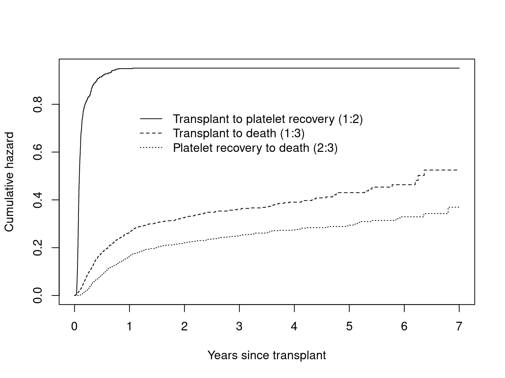
From the figure, proportional hazards for the two transitions to death could be As we noted before, the partial likelihood construction forces separate baseline hazards for transitions that emanate from a given state, i.e. the 1:2 and 1:3 pair in this case. However, it does allow a shared baseline hazard for transitions that terminate in the same state, i.e., 1:3 and 2:3. The fit below does adds this constraint. The resulting fit replicates coefficients in the “proportional hazards” columns of table T3.
efit2 <- coxph(list(Surv(tstart, tstop, event) ~ dissub + age + drmatch + tcd,
0:state("RelDeath") ~ 1 / shared),
id=id, data=edata, ties='breslow')
print(coef(efit2, type='matrix'), digits=2)
#> dissubALL_1:2 dissubCML_1:2 age20-40_1:2
#> -0.0436 -0.2972 -0.1646
#> age>40_1:2 drmatchMismatch_1:2 tcdTCD_1:2
#> -0.0898 0.0458 0.4291
#> dissubALL_1:3 dissubCML_1:3 age20-40_1:3
#> 0.2610 0.0036 0.2509
#> age>40_1:3 drmatchMismatch_1:3 tcdTCD_1:3
#> 0.5258 -0.0721 0.3185
#> dissubALL_2:3 dissubCML_2:3 age20-40_2:3
#> 0.1398 0.2503 0.0556
#> age>40_2:3 drmatchMismatch_2:3 tcdTCD_2:3
#> 0.5625 0.1691 0.2110
#> ph(2:3/1:3)
#> -0.3786The last model of table 3 adds a term for the time until platelet recovery. This variable is only defined for subjects who enter state 2.
prtime <- ifelse(edata$priorpr==1, edata$tstart, 0)/365.25
efit3 <- coxph(list(Surv(tstart, tstop, event) ~ dissub + age + drmatch + tcd,
0:state("RelDeath") ~ 1/ shared,
"PR":"RelDeath" ~ prtime),
id=id, data=edata, ties='breslow')
print(coef(efit3, type='matrix'), digits=2)
#> dissubALL_1:2 dissubCML_1:2 age20-40_1:2
#> -0.0436 -0.2972 -0.1646
#> age>40_1:2 drmatchMismatch_1:2 tcdTCD_1:2
#> -0.0898 0.0458 0.4291
#> dissubALL_1:3 dissubCML_1:3 age20-40_1:3
#> 0.2609 0.0038 0.2510
#> age>40_1:3 drmatchMismatch_1:3 tcdTCD_1:3
#> 0.5258 -0.0721 0.3182
#> dissubALL_2:3 dissubCML_2:3 age20-40_2:3
#> 0.1320 0.2518 0.0582
#> age>40_2:3 drmatchMismatch_2:3 tcdTCD_2:3
#> 0.5658 0.1668 0.2074
#> prtime ph(2:3/1:3)
#> 0.2952 -0.4069We have purposely used a mix of state:state notations in the above call for illustration.
- 0 is a shorthand for ``any state’’
- state(a, b, c) is a way to give a list of states, using the state labels
- a single state can be identified by its label.
A line can refer to state pairs that do not exist, without harm; a last step in the processing subsets to transitions that actually occur in the data. The first line implicitly includes ‘RelDeath’:‘RelDeath’ for instance.
Table T4 of the tutorial reruns these three models using a “clock reset” time scale. Code will be the same as before but with Surv(tstop - tstart, event) in the coxph calls.
We now predict the future state of a patient, using as our reference set two subjects who are <= 20 years old, gender matched, AML, with and without T-cell depletion. We will use the fit from column 2 of table T3, which has proportional hazards for the transitions to Relapse/Death and a separate baseline hazard for the PR transition.
edummy <- expand.grid(age="<=20", dissub="AML", drmatch="Mismatch",
tcd=c("No TCD", "TCD"), priorpr=1)
ecurve2 <- survfit(efit2, newdata= edummy)
plot(ecurve2, col=c(1,1,2,2,3,3), lty=1:2, lwd=2, xscale=365.25,
noplot=NULL,
xlab="Years since transplant", ylab="Predicted probabilities")
legend(700, .9, c("Currently alive in remission, no PR", "Currently in PR",
"Relapse or death"), col=1:3, lwd=2, bty='n')
text(700, .95, "Solid= No TCD, dashed = TCD", adj=0)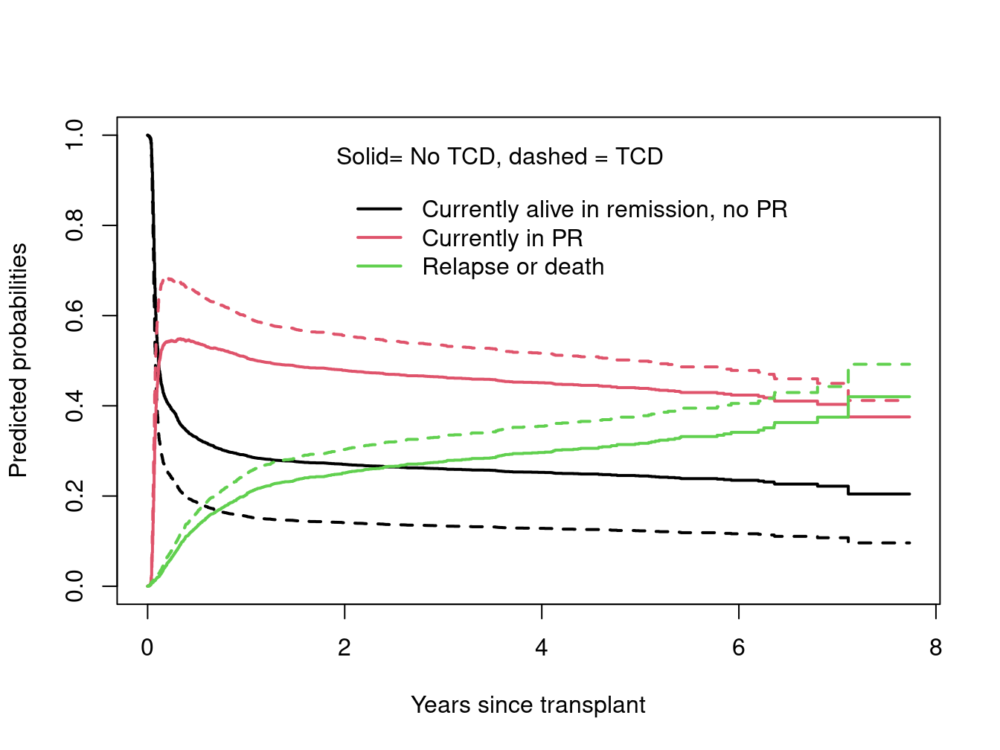
The predicted effect of TCD is to increase the occupancy of both the PR and remission/death states, at the expense of the unchanged state.
Figure 12 (T15) separates the remission/death state into two portions, those who had prior PR and those who did not. To create this set of curves we set up the data as the four state models shown below.
oldpar <- par(mar=c(0,0,0,0))
state4 <- c("Transplant", "Platelet recovery", "Relapse or death (1)",
"Relapse or death (2)")
cmat <- matrix(0, 4, 4, dimnames = list(state4, state4))
cmat[1,2] <- cmat[1,3] <- cmat[2,4] <- 1
statefig(c(1,2,1), cmat)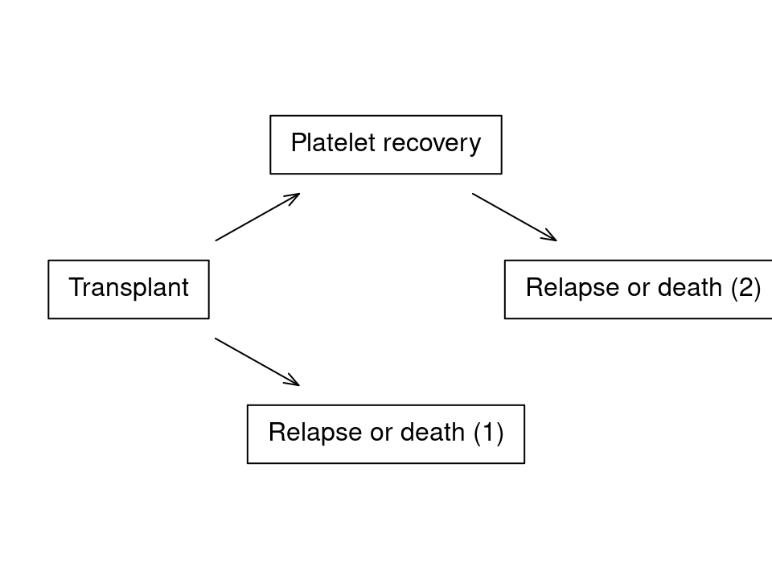
par(oldpar)etemp <- as.numeric(edata$event)
etemp <- ifelse(etemp==3 & edata$priorpr==1, 4, etemp)
edata$event4 <- factor(etemp, 1:4, c("censor", "PR", "RelDeath1",
"RelDeath2"))
survcheck(Surv(tstart, tstop, event4) ~ 1, edata, id=id)
#> Call:
#> survcheck(formula = Surv(tstart, tstop, event4) ~ 1, data = edata,
#> id = id)
#>
#> Unique identifiers Observations Transitions
#> 2204 3373 2010
#>
#> Transitions table:
#> to
#> from PR RelDeath1 RelDeath2 (censored)
#> (s0) 1169 458 0 577
#> PR 0 0 383 786
#> RelDeath1 0 0 0 0
#> RelDeath2 0 0 0 0
#>
#> Number of subjects with 0, 1, ... transitions to each state:
#> count
#> state 0 1 2
#> PR 1035 1169 0
#> RelDeath1 1746 458 0
#> RelDeath2 1821 383 0
#> (any) 577 1244 383
efit4 <- coxph(list(Surv(tstart, tstop, event4) ~ dissub + age + drmatch + tcd,
1:3 + 2:4 ~ 1/ shared),
id=id, data=edata, ties='breslow')
efit4$cmap
#> 1:2 1:3 2:4
#> dissubALL 1 7 13
#> dissubCML 2 8 14
#> age20-40 3 9 15
#> age>40 4 10 16
#> drmatchMismatch 5 11 17
#> tcdTCD 6 12 18
#> ph(1:3) 0 0 19
# some of the coefficient names change, but not the values
all.equal(coef(efit4), coef(efit2), check.attributes= FALSE)
#> [1] TRUEThe coefficient map (cmap) component of the fit verifies that the final model has a shared baseline for the 1:3 and 2:4 transitions, and separate coefficients for all the others. (The cmap matrix serves as a table of contents for the 19 coefficients in the model. It is used by the print routine to control layout, for instance.) We also verify that this simple relabeling of states has not changed the estimated transition rates.
Last, we redraw this figure as a stacked diagram. We split it as two figures because the version with both TCD and no TCD together had too many crossing lines. Figure 12 (T15) corresponds to the left panel.
edummy <- expand.grid(dissub="AML", age= "<=20", drmatch="Match",
tcd=c("No TCD", "TCD"), priorpr=1)
ecurve4 <- survfit(efit4, newdata=edummy)
oldpar <- par(mfrow=c(1,2), mar=c(4.1, 3.1, 3.1, .1))
pstack(ecurve4[,1,c(2,4,3,1)],
xscale=365.25, ylim=c(0,1),
xlab="Years since transplant", ylab="Predicted probabilities")
text(rep(4*365, 4), c(.35, .54, .66, .9), cex=.7,
c("Alive in remission, PR", "Relapse or death after PR",
"Relapse or death without PR", "Alive in remission, no PR"))
title("No TCD")
pstack(ecurve4[,2,c(2,4,3,1)],
xscale=365.25, ylim=c(0,1),
xlab="Years since transplant", ylab="Predicted probabilities")
text(rep(4*365, 4), c(.35, .65, .8, .95), cex=.7,
c("Alive in remission, PR", "Relapse or death after PR",
"Relapse or death without PR", "Alive in remission, no PR"))
title("TCD")
par(oldpar)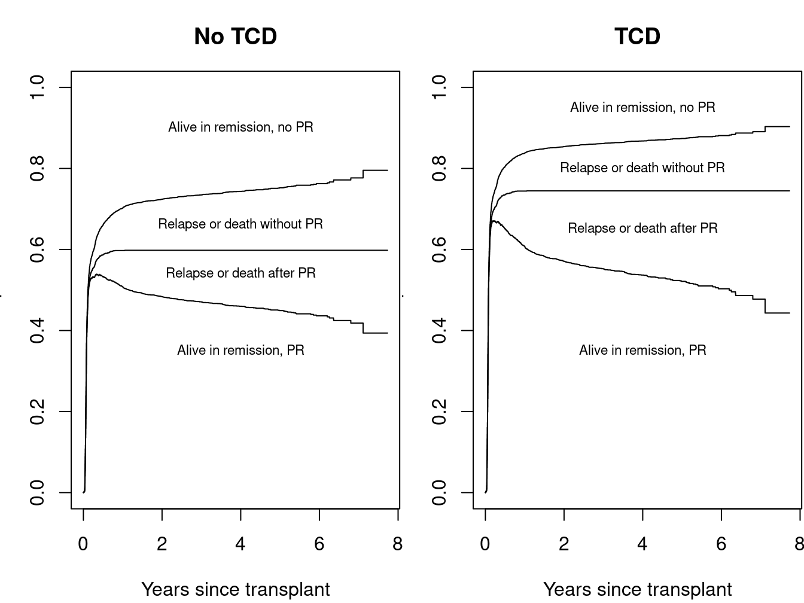
References
H., Putter, Fiocco M., and Geskus R. B. 2007. “Tutorial in Biostatistics: Competing Risk and Multi-State Models.” Stat. In Medicine 26: 2389–2430.